Stability of ATE supplies with different ATE test fixtures - UHC4 Stability and special features
Heinz Nuessle, Verigy
Paper-ID: 126977 May 2011
Abstract
This paper discusses the challenges of stability of high speed ATE DUT supplies.
The way such an supply is connected to the ATE test fixture and the design of this fixture, including the selection of blocking capacitors, strongly impacts the stability of such a supply.
This paper discusses all the theoretical explanations for effects which increase or even decrease stability and provides methodologies to address these challenges using examples from real designs.
Introduction
It is important for the test engineer to understand that the PDN performance can have an impact on the measured performance of the DUT. PDN performance is based on the stability of the ATE supply itself
We will first concentrate on some basic theory regarding power supply stability, especially in the context of ATE DUT power supplies. Later on we will discuss practical hints to improve and verify stability. Also how to use the special features of UHC4 for this purpose will be discussed.
ATE DUT Power Supplies
In ATE systems there are different types of power supplies depending on the DUT requirements. The options range from low current, low noise power supplies to high-current power supplies for applications like microprocessor testing. The ATE power supplies usually reside in the ATE test head and connect to the ATE test fixture interface through a cable assembly as shown in Figure 1.
State-of-the-art-processors and other modern high-speed devices have a power consumption which is switching very fast from low- to high-power and vice versa. This in conjunction with low supply voltages requires very fast ATE power supplies and an optimized DUT board design. It includes proper layout as well as proper selection of capacitors to stabilize the supply voltage. Everybody knows that finally ceramic capacitors are needed close to DUT, to manage the very high dI/dt of load current. On the other hand, electrolytic- or tantalum caps are also needed. These capacitors are not only necessary to increase the total capacitance, they are also essential to maintain the stability of the supply itself. Which types of capacitors increase or decrease stability and the way they do it, shall now be discussed.
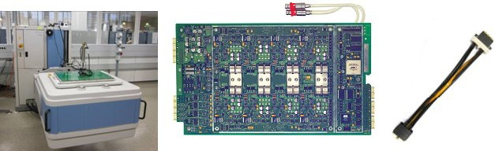
Figure 1: ATE system (left), ATE power supply card (center) and power supply cable assembly (right)
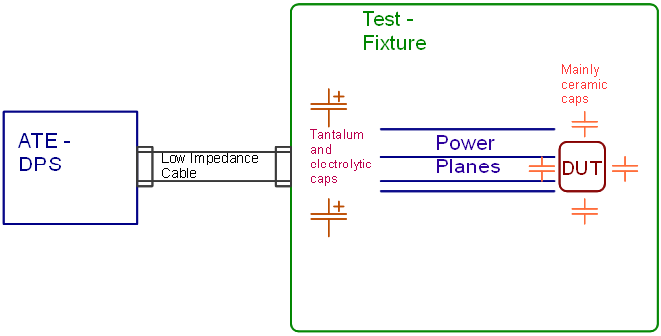
Figure 2: High-level overview of the connecting a ATE DUT power supply to an ATE test fixture with a DUT
ATE DUT Power Supply Stability Basics
Figure 2 shows a high-level diagram of the different components of an ATE system PDN including the ATE DUT power supply (DPS) and the test fixture with its power planes and decoupling capacitors. The ATE DUT power supply and the low impedance cable that connects the ATE system to the test fixture are designed and specified by the ATE system manufacturer. However it is the test engineer who is responsible for the test fixture since its design is driven by the DUT application requirements. Each ATE DUT power supply is a system primarily consisting of three blocks: controller, output stage and feedback circuit. Each of the blocks is described by its own transfer function and they are arranged in a closed loop as shown in Figure 3. The desired programmed voltage value is set and connected the to the system as Uprog.
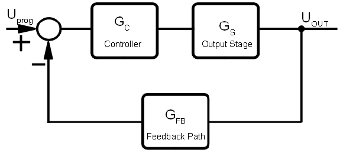
Figure 3: Closed Control Loop
To better understand stability basics, the open-loop view is more useful. Stability can now be described by phase/gain characteristic of open loop in the frequency domain. Total gain is simply a sum of gain ( in dB) of each block and total phase is sum of phase angles of each block.
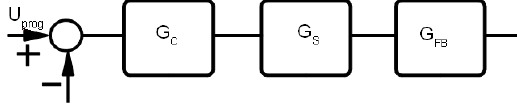
Figure 4: Opened Control Loop
Total Gain and phase of open loop:
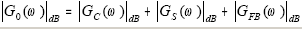
(1)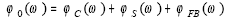
(2)Figure 5 shows a plot of the open loop frequency response where ωT is called 'transit' frequency or 'crossover' frequency. This frequency value is set by the DPS designer. In this example it is 250 kHz. The higher its frequency the faster the DPS will respond to changes in the DUT load The trade-offs is that the higher the frequency point can also create over and undershooting in the DPS response, and also make the DPS more prone to become unstable because of a smaller phase margin. This is the balance the ATE DPS designer must maintain when developing a new product for a particular application or system.
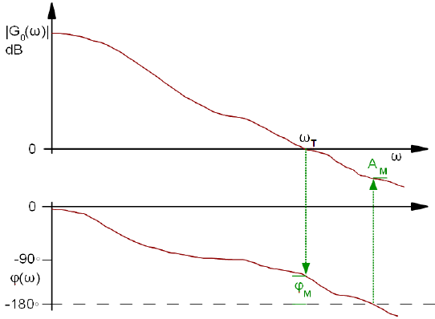
Figure 5: Stability requirements described by simplified Nyquist criterion
To guarantee that the feedback loop (i.e. the DUT power supply operation) is stable there are some stability requirements that are referred to as the Nyquist stability criterion [1], [3]. Those requirements are:
- Absolute value of G0 has to be < 0 dB while the phase is less than -180º
- Phase margin φM and amplitude margin AM need to be positive Note: If slope of gain graph is at least 20dB / decade, it is sufficient to check phase margin only. In this way amplitude margin is automatically guaranteed.
The ATE test fixture is a part of the PDN control loop and it is not unusual to have an ATE DPS that requires a minimum capacitance in the test fixture to achieve stable operation. This minimum capacitance has the effect of decreasing open loop gain which in turn increases the phase margin
When designing an ATE test fixture it is important to verify if there is a minimum capacitance requirements for the ATE DPS one intends to use. For example, the Verigy UHC4 high-current DPS requires 270 uF to guarantee sufficient stability. But as will be shown later this minimum capacitance needs to be implemented in a proper way by correctly choosing the type of decoupling capacitors used to reach this minimum required capacitance.
Properties of real capacitors
A capacitor is not simply a device with pure capacitance. In series with the ideal capacitance, there is a series resistor called ESR and an inductance called ESL as shown in figure 6. Both are also called 'parasitics' by most engineers denoting a preference that they should not exist but as already stated by other authors and also shown in this paper they are necessary to maintain stability of whole circuit.
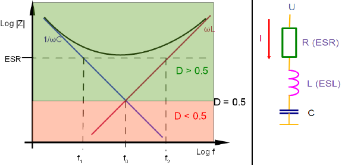
Figure 6: ESR and ESL and their impact on the impedance response of a real capacitor
The impedance, resonance-frequency and corner frequencies of a real capacitor are then described by the following equations:
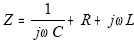
(3)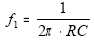
(4)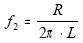
(5)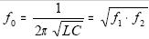
(6) Resonance frequency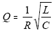
(7) Quality factor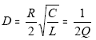
(8) Damping factorThere are primarily two types of capacitors available. The type with a flat resistive bottom impedance response vs. frequency in the case of f2 > f1 and the type with a sharp transition from a capacitive to an inductive state at the resonance frequency f0.
Ceramic capacitors typically have a sharp transition between capacitive and inductive states because their f1 is bigger than f2. Due to a much higher capacity, and very often a higher ESR, most tantalum and electrolytic capacitors have a very low f1 which results in a flat resistive bottom as shown in Table 1. The difference between both cases can be described by using (4), (5) and (6).
For f1 = f0 the condition is:
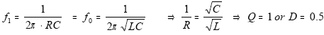
For f2 = f0 it is:
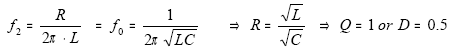
In other words:
For D = 0.5 or Q = 1, there is:
f1 = f2 = f0 (9)
All three graphs have one common intersection point at f = f0
with the impedance R = ω0L = 1/ ω0C
For that reason, f0 and D are adequate attributes to describe the behavior of a capacitor.
Type |
f1 /kHz |
f2/kHz |
f0/kHz |
ESR/ mΩ |
ESL / nH |
D |
Q |
|---|---|---|---|---|---|---|---|
KEMET T510 470 μF |
18.3 |
2016 |
192 |
18,5 (30 in Datasheet) |
1,46 |
5.24 |
0.095 |
KEMET T530 150 μF / 10 V |
186 |
315 |
242 |
5,7 |
2,88 |
0,65 |
0,77 |
OSCON SVPC 1500 μF |
10.6 |
265 |
53 |
10 |
6.0 |
2.5 |
0.2 |
OSCON SVP 270 μF |
32,8 |
687 |
150 |
18 |
4,17 |
2,29 |
0,22 |
VISHAY 594D 1000 μF |
11.3 |
3700 |
205 |
14 |
0.6 |
9.0 |
0.055 |
Ceramic 100 μF |
884 |
136 |
350 |
1.8 |
2.1 |
0.2 |
2.5 |
Ceramic 1 μF |
15900 |
1590 |
5000 |
10 |
1.0 |
0.16 |
3.16 |
OSCON SEPC 270 μF (THC) |
58.9 |
206 |
110 |
10 |
7.7 |
0.93 |
0.53 |
Connecting a DPS to a Load
When connecting the DPS to an external load (i.e. the DUT and the decoupling capacitors on the test fixture), there is an impact on the open loop frequency response. Additional phase lags can cause the feedback loop of the DPS to become unstable.
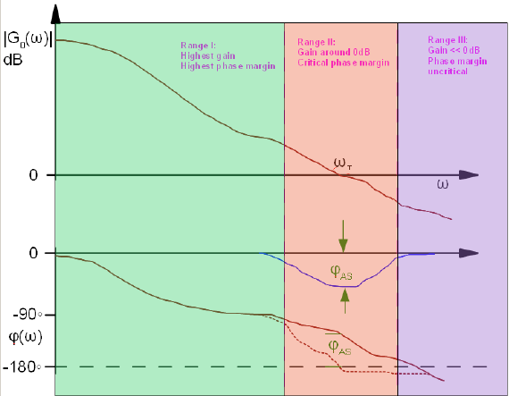
Figure 7: Three more or less critical areas regarding stability
An additional phase-shift φAS just in the area around ωT can decrease phase margin to zero, causing oscillations Phase shifts well below ωT as well as far above ωT are less critical as shown in Figure 10. [2]
When connecting a DPS to a load in the test fixture (for example, a decoupling capacitor), the result is a voltage divider circuit like the one illustrated in Figure 8. The ATE DPS including the cable assembly are modeled by an ideal voltage source with a series resistance R1 and a series inductance L1. The decoupling capacitor C2 is modeled with an equivalent series resistance (ESR) R2 and a series inductance (ESL) L2.
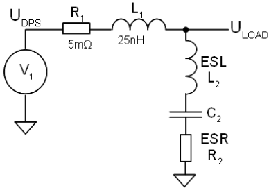
Figure 8: Schematic of an example of the connection of ATE DUT power supply with a typical impedance of 5mΩ and inductance of 25nH to a capacitor on ATE test fixture
The transfer function for the circuit in Figure 11:
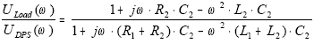
(10)The phase behavior of the circuit is critical for stability. For very low frequencies, phase of the circuit is zero. With increasing ω, a positive imaginary term in the numerator transitions the phase of the complete equation to a positive value. On the other hand, such a term in the denominator turns the phase of whole equation to a negative value. We can now compare the terms: The imaginary term in numerator is multiplied with R2, the term in the denominator is larger because it is multiplied with (R1 + R2). With increasing ω, phase starts to go first to a negative value, possibly jeopardizing stability. For very high frequencies, the phase turns back to zero.
To better understand Equation 10, let us look at an example using an ATE DPS with a fT = 250 kHz and a phase of -100º. This is equivalent to a phase of margin of 180 º - 100 º = 80 º . For C2 500 ceramic capacitors in parallel have been used. Each one of these capacitors have a 1 μF capacitance, ESR of 1 mΩ and an ESL of 1 nH each which results more or less in an ideal capacitor. The open loop response is shown in Figure 9.
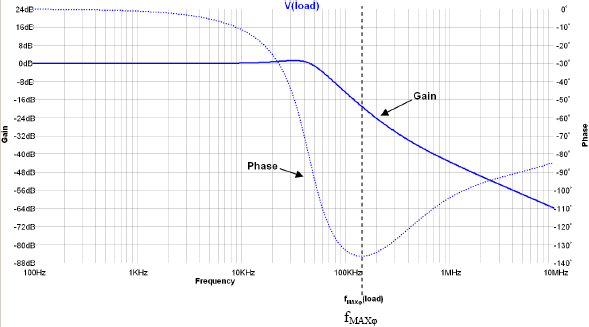
Figure 9: Additional phase shift is up to about -130º over a wide frequency range around 250 kHz which corresponds also to the critical region causing the DPS to become unstable
Calculation: In addition to the existing phase of -100º of the ATE DPS, there are 130º phase lag due to pure capacitive load. The resulting phase is -100º - 130º = -230º which is 50º below the minimum of -180º. Such a condition is unstable and causes oscillations on the ATE DPS output. Summary: The inductive source impedance of DPS in conjunction with a capacitive termination is the reason for generating such a phase lag.
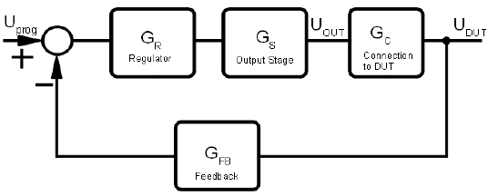
Figure 10: Connecting a DPS to a load adds one more block to the loop thereby adding phase and gain and influencing stability. The ATE test fixture becomes an integral part of the ATE DPS
In the second example we use four 270 uF electrolytic type capacitors in parallel with an ESR of 10 mΩ and an ESL of 7.7 nH instead of the 500 ceramic capacitors from the previous example. The new frequency response is shown in Figure 11.
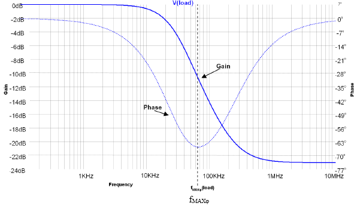
Figure 11: Connecting in parallel four 270 μF electrolytic type capacitors to an ATE DPS. Negative phase shift is much smaller (compared to Fig. 9) and limited to a relatively small frequency range below fT. This setup is stable
Let us now look why we got a quicker return of phase to zero in the second example with
a little more detail.
One possible way in solving this problem is to use equation (3), (4) and (6). Above
resonance frequency of C2, its impedance becomes inductive.
Let's now calculate resonance frequency of just these capacitors:
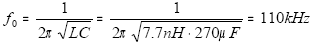
(6a)The resonance frequency of this type of capacitor is below fT which defines the middle of the critical frequency range . In the second example a capacitor has been used with a resonance frequency lower than transit frequency of DPS. This means, that in the critical frequency range the impedance of the capacitor is inductive. It other words, combining an inductive source with an inductive termination causes much less phase shift than combining an inductive source with a capacitive termination. There is another effect which limits the phase lag: With (4), f1 of this capacitor is 58.9kHz. Above this frequency, its impedance is mainly resistive. fMAXφ (the frequency with max. phase lag) is then only slightly above f1. One only has to guarantee that f1 is smaller than f0 by making the capacitor ESR high enough. When using equation (9), it can be shown that the solution is D > 0.5.
This allows us to formulate Solution #1
From the above discussion one can state that is important for C2 to use a decoupling capacitor with a resonance frequency f0 below fT of the DPS. In other words, for stability there is some ESL required. ESL is an inherent part of each capacitor, normally referred to as 'parasitic' element. It is often not described in some data sheets but nevertheless is very important when designing a stable PDN system. Regarding necessary ESR, see table 2. Note that in this discussion we are referring to the bulk decoupling capacitors on the ATE test fixture and not to the decoupling capacitors that provide the power decoupling to the DUT in the higher frequencies and are located under or very close to the DUT. These decoupling capacitors need to be ceramic.
Solution #2
Let us now investigate whether decoupling capacitors with a larger f0 can also be used.A capacitor with a resonance frequency of 200 kHz, which is close to fT of ATE DPS was selected. This resonant frequency would be too high for the previous example.
A 1000 μF tantalum capacitor was chosen for simulation. The capacitance value and ESL of 0.6 nH were kept constant, while the ESR was changed from a very low value to the actual value of 14 mΩ.
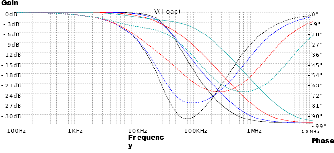
Figure 12: Simulation of 1000μF with an ESL of 0.6nH and different ESR-valuesSolid lines are gain and dashed are phase
Color of trace |
ESR [mΩ] |
|---|---|
black |
1 |
blue |
2 |
red |
5 |
green |
14 |
From to the results in Figure 12 it is possible to observe that increasing the ESR has two effects. First it shifts fMAXφ to values above fT or in other words into the non-critical frequency range III of Figure 10 [2]. Secondly it limits the maximum phase deviation.
Table 2 summarizes the recommended values when deciding the type of decoupling capacitor to use on the ATE test fixture for an ATE DPS with a fT of 250 kHz. Capacitors with low resonance frequency require only low damping factors. With increasing resonance frequency, damping factor must be also increased. Usage of capacitors with even higher f0 would require a lot more of ESR to guarantee stability, so it's better not to use them at all.
f0 |
D |
Q |
|---|---|---|
<= 100 kHz |
>0.5 |
< 1 |
About 150 kHz |
>1 |
< 0.5 |
200...250 kHz |
>2.5 |
< 0.2 |
> 300 kHz |
Do not use |
Do not use |
Note1: Recommended values contain some safety margin, so using capacitors with marginal f0 / Q - combinations do not jeopardize stability.
Note 2: For usage of these capacitors with ceramic capacitors in parallel, see (12).
Comparison with low speed supplies
Why is now a high speed supply more sensitive to such phase lags than a low speed supply? The reasons are mainly:
- Much lower fT, phase lag caused by external capacitors is well above fT.
- Capacitors with much higher ESR will be used, in the critical frequency range they are mainly resistive, not capacitive
Verification
To verify that the results of the previous theoretical discussion can be observed in a real setup. An ATE DPS with a fT of 250 kHz was connected to different types of decoupling capacitors and for each test setup the gain and phase of the open loop response was measured and compared as shown in Fig. 13
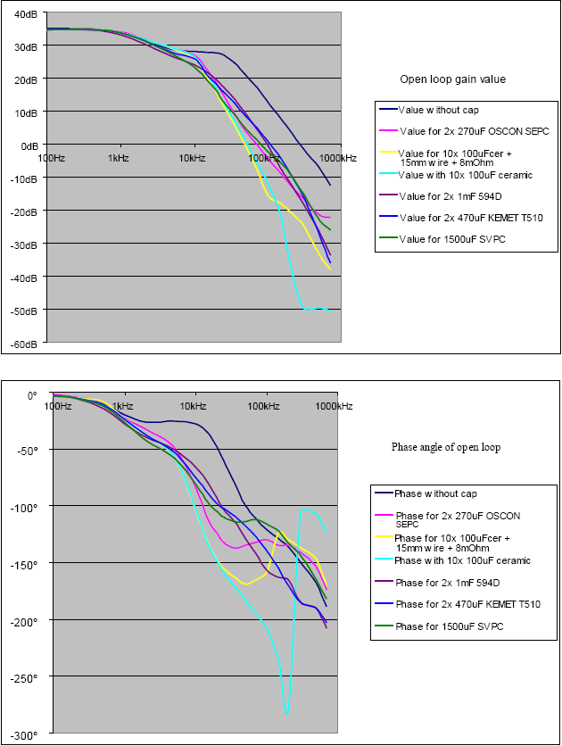
Figure 13: Bode plot of DPS with different capacitors (complete open loop)
The measured results correlate well with theoretical predictions:
- Without a capacitor, gain is too high, stability is marginal
- A minimum capacitor decreases gain to improve stability
- Pure ceramic caps generate a huge phase lag making the DPS unstable
- Electrolytic caps with sufficient ESR and ESL raise the phase and improve stability.
- Increases in the phase starts with f > f1 , when the capacitor starts to become resistive
- Above f0, capacitor becomes inductive and results in the phase returning to a value closer to zero.
- This effect can even be observed with a self made capacitor, consisting of a ceramic capacitor, added SMD - resistor and a piece of wire (f0 = 150 kHz, f1 = 122 kHz, f2 = 183 kHz and D = 0.6, yellow graph).
Note: When comparing the values of the self made capacitor with table 2, damping factor is still too low, but nevertheless the phase shifting effect can be measured especially when comparing the yellow line with the light blue one.
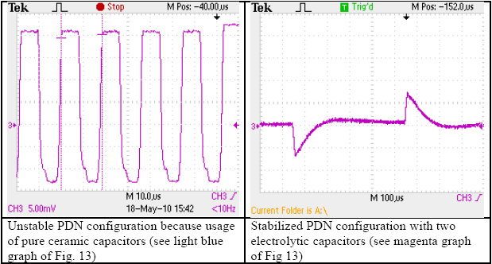
Figure 14: ATE DPS response in the time domain with different types of decoupling capacitors for stable and unstable configurations
Using ceramic capacitors
So far, we have only discussed the bulk capacitors that provide the decoupling capacitance to the DPS. Ceramic capacitors positioned close to, or even under DUT, are necessary to provide the decoupling of the higher frequencies to the DUT that the DPS cannot provide . Due to their low ESL and ESR values they stabilize the voltage even in case of high dI/dt of load current. The choice of these ceramic capacitors must be made taking into account the DUT requirements, and there are currently several design techniques available [4]. The question is how to guarantee the stability of the ATE DPS since, as we have seen before, if ones uses only ceramic type decoupling capacitors with an ATE DPS having a fast response time, it might become unstable. It is not only the excessive high f0, it is also the low damping factor D, which does not allow the use of them solely together with an DPS. Let us then try to understand if adding ceramic decoupling capacitors to bulk capacitors chosen according to Table 2 has an impact on the ATE DPS stability.
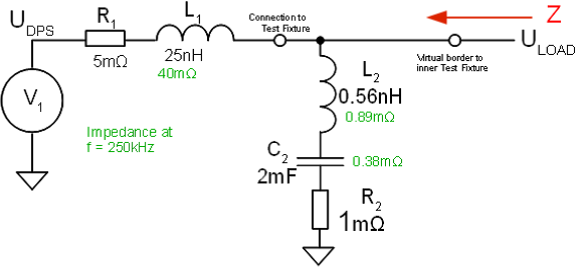
Figure 15: Circuit schematic looking from a test fixture point into the DPS connected to the bulk capacitor C2
In this example, the bulk capacitor is formed by C2 with f0 = 150kHz and D = 0.5, also less damping than required according to solution #1. Nevertheless, there is a strong positive effect. For further information, the impedance of all parts are noted at f = 250kHz. According to Thevenin's theorem, DPS plus C2 (including its ESR and ESL) can now be considered as a Black-Box. The impedance of this box is R1 + jωL1 in parallel with capacitor C2. Because of very much smaller impedance of all elements of C2, the impedance of black box Z is mainly defined by C2 (with ESR and ESL included). In other words it is more or less independent from R1 and L1 and much smaller.
Note: In the moment, impact of ATE test fixture design itself is negligible. It will be discussed in the next paragraph.
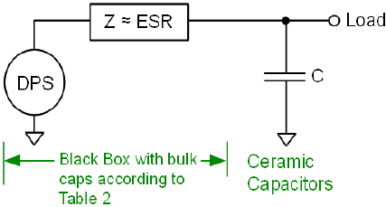
Figure 15a: Impedance of Black Box
All bulk capacitors have a damping factor above 0.5. This is especially true for the caps with higher resonance frequency which requires an even higher damping factor. Due to their high damping factor, f1 is small and f2 high. The impedance of such a bulk capacitor is resistive for a broad frequency range. Therefore, its impedance can be simplified to a resistor. The black box has an output impedance approximately the ESR of the bulk capacitor. When now adding a ceramic capacitor, a RC - low pass filter will be created. Such a filter creates a phase lag with
φ = -arctan(ω * R * C) (11)
Goal is not to add more phase-shift than unavoidable. Assuming a ESR of 2 mΩ and a ceramic capacitor of 160 μF, phase lag at 250 kHz is
φ = -arctan(2π * 250 kHz * 2 mΩ * 200 µF) = -32° (11a)
Only about 30° phase lag is a good value to guaranty stability. This is also a selection criterion for type and capacitance of the bulk capacitors. If more ceramic capacitance is needed, use bulk capacitors with less ESR or connect them in parallel as much as necessary. This keeps the product of ESR and ceramic capacitance constant
Using result of (11a), the second requirement can be defined: 367
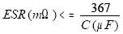
(12)The right combination of ESR and capacitance of bulk capacitors has to be found. To achieve this, it is better to combine some smaller capacitors than selecting few caps with large capacitance. Please also add some spare pads for extra bulk caps. Start with the capacitors which are required and insert more (maybe other types) if necessary.
Example
200 μF of ceramic capacitance will be required. According to (8), ESR of bulk capacitor mus be smaller than 2mΩ. With the VISHAY 594D 1000 μF types and ESR of 14 mΩ each, 7 such capacitors are required which results in a total capacitance of 7000 μF. For a 40 A-supply such a huge capacitance is not required. When using OSCON SVP with 270 μF and an ESR of 18 mΩ each, 9 capacitors are necessary with a total capacitance of 2430μF only.
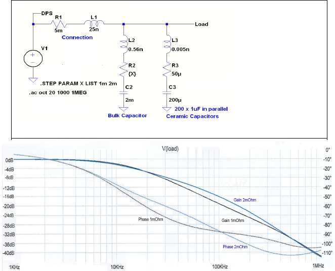
Figure 16: DPS connected to a bulk capacitor with a resonance frequency of 150kHz and an ESR of either 1mΩ or 2mΩ. 2mΩ results in D = 1.89 and exactly matches requirement (8). Half the ESR is just the limiting case defined by table 2
Comparison with Figure 9: 42° less phase shift at f = 250 kHz do stabilize the DPS-circuit.
Practical hints to select bulk capacitors
After having read all the theory above you can see there is not only one stable solution. Many different combinations of bulk- and ceramic capacitors fulfill the stability requirements. For stability-reasons many different ceramic capacitors can be used, there is no reason to select just one type or one manufacturer. Capacitance and arrangement of ceramic capacitors is mainly defined by their high-frequency behavior, a different topic not covered in this paper. This paper concentrates on stability-aspects and wants to give some information about the number and size of bulk capacitors.
At the beginning of this paper it has been noticed that the minimum bulk-capacitance per 40A.channel is 270μF. This is true, but this value is only the absolute minimum to maintain the stability of UHC4. For most applications a typical value for one 40A-channel is 1500μF. Finally this value has to be verified by using equation (12), because the total ESR of all the bulk capacitors must be not too high.
MPN |
Size |
ESR of each capacitor |
Number of required capacitors according to (12) |
Total capacitance |
|---|---|---|---|---|
KEMET T510X477K006ATE030 |
470μF / 6V |
25mΩ (average between 18mΩ and 30mΩ) |
13 |
6110μF |
SANYO OSCON 10SVP270M |
270μF / 10V |
18mΩ |
9 |
2430μF |
SANYO OSCON 2R5SVPC1500M |
1500μF / 2.5V |
10mΩ |
5 |
7500μF |
VISHAY 594D108X06R3 |
1000μF / 6.3V |
14mΩ |
7 |
7000μF |
Please compare total capacitance required by (12) with the 1500μF / 40A basic rule.
With the selection of the type of bulk-capacitors the total capacitance can be optimized.
Example: If only one 40A-channel shall be used, it is sufficient to have 9 of the 270μF SVPs, because 2430μF is just a little bit above the typical 1500μF. In case of doubt add at least some spare pads to be able to insert more capacitors later on to optimize stability and load step response. Always a good choice is to combine different types of capacitors i.e. some 1500μF-caps with some 470μF caps
Just one last note:
All the bulk capacitors noted in Table 3 fulfill the requirements of Table 2.
The KEMET T530 noted in Table 1 has not enough damping factor and should not be used
Typical stack up of a power board
Having stabilized the circuit by selecting proper type of C2, there is another effect, which has to be understood and investigated. Let's assume to have the 'classic' location of capacitors: The tantalum- or electrolytic types close to connection of DPS and the ceramic capacitors close to connection of ATE test fixture. In between there should be a multi-layer power plane with sufficient width and proper stack-up:
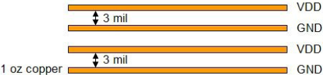
Figure 17: Typical stack up of power planes
A good 'rule of thumb' is to have a width of 100mm per plane for a current of 100 A with at least 30μm thickness. Also a 3 mil to 4 mil distance between the power and GND planes Having a stack up with more than one Power (VDD) and Return (GND) - plane drastically increases capacitance and decreases inductance of power path. This decreases significantly impedance of that path for DC and AC. Inductance is related to magnetic fields which are caused by currents flowing to the DUT and back. If they are very close side by side, their magnetic fields will compensate thereby decreasing inductance. Compensating magnetic fields will be enhanced by:
- Having layers with enough width
- Having multiple layers
- Having layers close together with no other layers in between
This also avoids possible crosstalk to other parts of the ATE-fixture
Further phase shift due to not optimized DUT-Boards
If that design is not possible, an extra inductance is added between DPS-side and DUT-side of test fixture. Result would be extra phase shift in conjunction with decreased phase margin and possible oscillations. Figure 18 shows a circuit where the ATE DPS is connected to the DUT with one electrolytic capacitor C2 (i.e. the result of 4 electrolytic capacitors in parallel) and one ceramic decoupling capacitor C4 (i.e. the result of 500 capacitors ceramic in parallel) that are very close to the DUT. Since the electrolytic decoupling capacitors are usually further away from the DUT as the ceramic decoupling capacitors and assuming that a power plane is available on the test fixture we model the inductance and resistance between the two capacitors by a 2 nH inductance and a 200 μΩ resistance. In this model, the capacitance of the power plane itself is ignored.
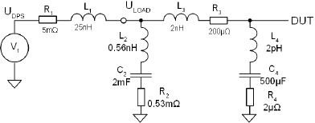
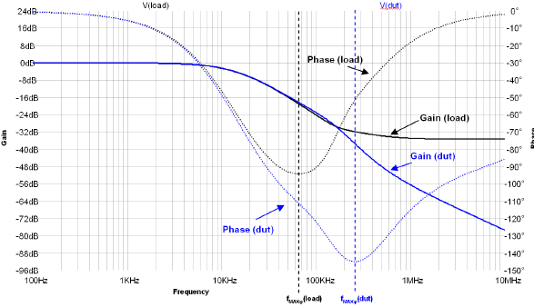
Figure 18: Simulation with 2nH and 200uΩ in between node 'Load' (where ATEDPS is connected to DUT-Board) and node 'DUT' which is close to device under test where the ceramic decoupling capacitors are located. Extra phase lag between nodes 'Load' and 'DUT' is around 50°. Most of this phase shift is caused by extra inductance L3. Dotted lines are phase and solid lines are gain
Such a huge phase lag jeopardizes stability. For completeness, let's investigate a solution for that possible problem.
Sensing with different AC-and DC-path
Test fixtures or sockets, or the connection via probe needles to inner circuits of DUT inherently might have too much inductance or resistance. A high-level model of a DPS to DUT connection with a signal sense connection is shown in Fig. 19. Additionally to Fig 18, resistance and inductance is shown in power- and in return path:
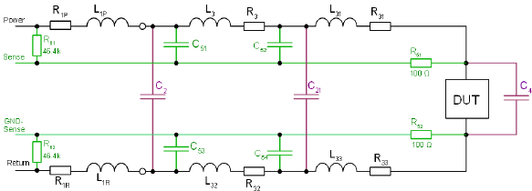
Figure 19: Connection of ATE DPS to DUT. Black traces belong to the power path, blocking capacitors are magenta and sensing elements are green
Force- and Return- power is fed via resistive and inductive path R3, L3, R31, L31,L33, R33, L32 and R32, causing some extra phase shift. On the left side of Figure 19, there is the DPS connected to the test fixture where an electrolytic or tantalum capacitor C2 resides. On the right hand side, close to DUT, there are the ceramic blocking caps C4. In the middle of the board there might be additional capacitors C21. Note that to keep the schematic as simple as possible, blocking capacitors C2, C21 and C4 are shown without their (ESR/ESL) parasitic elements. Sense lines are connected to DUT via R51 and R52. This allows using the optional caps C51, C52, C53 and C54. They provide feedback the AC-path from a node a little bit more far away from DUT. Such a node has less phase shift than sense point directly at DUT. Two alternative AC-paths are shown in Fig. 19: C52 and C54 are more close to DUT, C51 and C53 are closer to DPS. The last capacitors should be used only if usage of C52 and C54 do not allow a stable result. The reason is, the further away from DUT the capacitors are located, the more the load step response is affected. Typically, the optional capacitors C51 to C54 should be in the 50nF range. Increasing the size of these capacitors improves stability to some extend, but additionally slows down load step response of DPS. For that reason, it is important to increase their capacitance only as much as necessary for stability. One hint: When creating the layout of test fixture, add redundant pads for R51, R52, C51, C52, C53 and C54 to have the flexibility to insert the capacitors and resistors as required. In a first step, R51, R52 can be replaced by a zero Ohm resistor
Voltage drop
UHC4 allows to measure voltage drop on force- as well as return path to check supply conditions.. There is also an max. value to be set for these drops. If exceeded, UHC4 opens its AC-relay. The limit of UDROP_FORCE + UDROP_RETURN = 500mV total. Each of these values can be programmed individually. Default value is 250mV each.
Please keep in mind the inherent resistors R1P and R1R of 5mΩ total which belong to the connection cable.
Allow some headroom between measured and programmed max. values to guarantee a stable operation. On the other hand, when using probe needles, this headroom should be not too big. A smaller headroom helps to protect the needles in case of having damaged ones.
When having different AC- and DC-sense paths, a DC-sense error will be generated. In the example above, R51 and R52 are set to 100Ω. There is no exact value required for these resistors, but it should be not too high. Inside of the DPS, there are resistors R61 and R62, by default connecting force with sense to avoid overvoltage in case of not connected sense lines. The disadvantage is, R51 with R61 as well as R52 with R62 generate a voltage divider. By this way, a voltage drop across the power path will not be totally compensated.
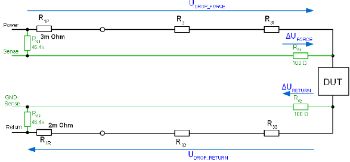
Figure 20: Resistive components of Fig. 19 with all DC-voltage drops
Remaining error for R61 >> R51 and R62 >> R52
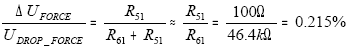
(11)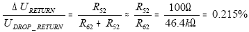
(12)If the drop across power lines is 200 mV, the sense-error will be 0.43 mV. This should be no issue in most cases but must be considered individually.
Please keep in mind, that (11) and (12) are noted for one channel only. In case of ganging, all force-sense lines are connected to DUT as well as all GND-sense-lines. This switches in parallel also the default resistors R61 and R62 of all ganged channels, increasing the voltage errors.
Equations (11) and (12) can also be used in case of any resistance in the sense leads, even if the resistance is only generated by layout or contact resistances.
APPENDIX, Further Features of UHC4
- A1) DUT_CAP_ON#
-
Note Some component mentioned below may no longer be available. Any such components should be replaced with equivalent parts.
It is possible to automatically switch the big blocking caps on ATE test fixture on and off depending on current force-range. Using this pin guarantees the right timing especially when changing current ranges during connect state. This is also a stability feature: The 40A-range requires some hundred μF minimum capacitance to operate stable, the smaller ranges allow only few μF to measure small IDDQ currents and achieving small settling times.
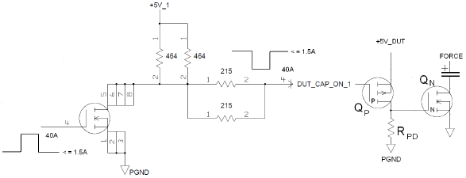
Figure 21: Diagram of Blocking-Cap ON/OFF circuitry. On the right side there are the components needed on test fixture
Possible selection of devices to switch the big tantalum or electrolytic capacitors:- P-Channel: IRLML6402GTRPBF
- SOT23, 135 mΩ at 2.7 VGS or 65 mΩ at 4.5 VGS
- Total gate charge 12 nC max at VGS = 4.5 V
- N-Channel: IRF6718L2TRPbF
- Direct FET, 1 mΩ at 4.5 VGS
- Total gate charge 96 nCmax at VGS = 4.5 V
- Pulldown-Resistor RPD about 270 Ω to achieve a switching time constant in the 5μs-area
- P-Channel: IRLML6402GTRPBF
- A2) Sensing when supplying many devices in parallel
Sometimes, more than one device has to be supplied with power, especially when having more than one test site. In this case, the UHC4 should be connected to the different devices using additional sense resistors. It allows to adjust the UHC4 to an average value of all devices. Figure 22 shows sensing of the power path, but the same technique can be used to sense the return (GND) path too. Resistance of all the RS should be about n x 100 Ω. If necessary, an additional capacitor C can be added as described in Fig. 19.
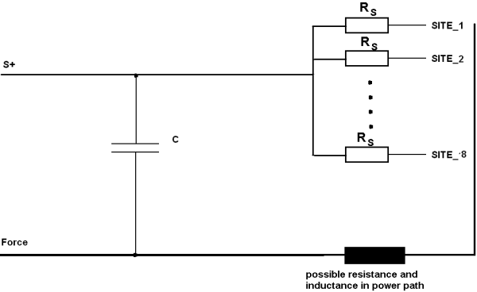
Fig. 22: Sensing of Force-Path with n = 8 sites
- A3) Ganging
Ganging allows to increase output current of UHC4. Ganging of n channels results in n times 40 A total output current. For that purpose, all the forces are connected to one common plane as well as as the returns. Also, all the force-senes-lines are connected to DUT as well as the return-senses of each channel. Please refer to topic DPS128 / DPS64 functionality and features for more information.
Operation: Ganging is defined by pin configuration (for setup details please refer to UHC4T specific setup tasks in TDC). When doing that, automatically the channel with the lowest number is defined to be master, all other subsequent channels will be defined slaves. The master generates an analog signal which is proportional to its output current. Level is the same as the current monitor (1 V/10 A). The slave(s) are set to the same output voltage. They compare their output current with the master-current and adjust if necessary. By this way, current sharing is achieved.
When having master and slave on the same board, routing of 'Ganging'-signal is done automatically. If not, an external connection is necessary. Details see Fig. A1
Please note: For ganging across UHC4 board boundaries, the order in which the UHC4 pins belonging to different boards are entered in the Pin Config GUI for the first time when setting up a new device is very important. It determines the actual ganging order, i.e. the DDIC command written to the pin configuration file (for example, DDIC CONN,227GO,230GI)) is derived from that entry. It must therefore be assured that the order of channels belonging to different UHC4 boards matches the ganging order predefined by the corresponding Gang_Out to Gang_In connections on the DUT board.
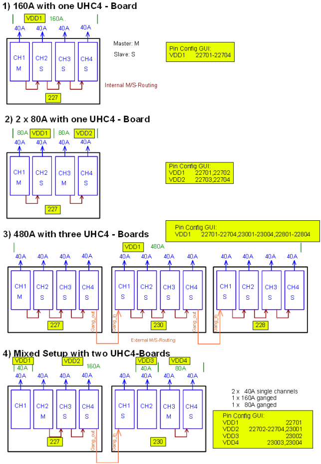
Figure A1
Conclusions
We have pointed out that on the PDN design it is important to make sure that the ATE DPS is operating in a stable mode especially when using an ATE DPS with a very fast response time. In this context the ESR and ESL values of the decoupling capacitors should not be treated simply as "parasitic" but as important characteristics of the capacitors that enable the stability of the test fixture PDN. It is then important to choose capacitors such as bulk tantalum capacitors that have their ESL and ESR values specified in the manufacturer's data sheet. Be aware, that sometimes real values of ESR and ESL differ from data sheet. Also sometimes data sheet does not specify such values precise enough. If ever possible, measure these values by a appropriate test set up. Select the bulk capacitors according to Table 2 and check their number and size with formula (12). Add extra pads to the layout to be flexible in having performance issues. For first estimation use SPICE simulation Tool. The reduction in impedance at the higher frequencies is best accomplished by placing low ESL and ESR ceramic capacitor on the DUT power and ground pins and taking advantage of the large power and ground planes available on an ATE test fixture. Be sure to use multilayer power planes with enough width to decrease inductance and resistance to a safe level. If not possible, add additional pads to be able to have separate AC- and DC-sensing. Use built in verifying feature high-speed-sampler. Use also the DUT-CAP_ON feature to optimize capacitance of test fixture depending on task.
References
[1] Manfred Reuter and Serge Zacher, "Regelungstechnik für Ingenieure", Vieweg Verlag, 2002.
[2] Heinz Nüssle, "Lecture in Control engineering", Baden-Württemberg Cooperative State University Horb/Germany
[3] Otto Föllinger: Regelungstechnik Hüthig Verlag 1994